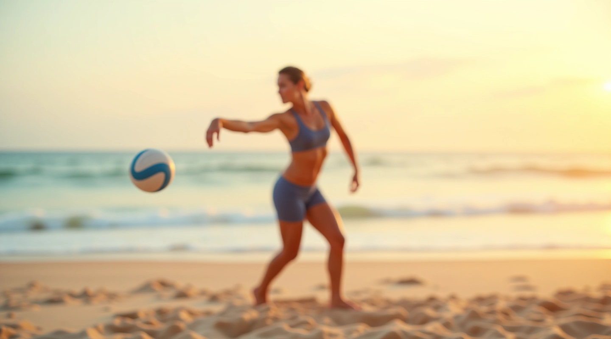
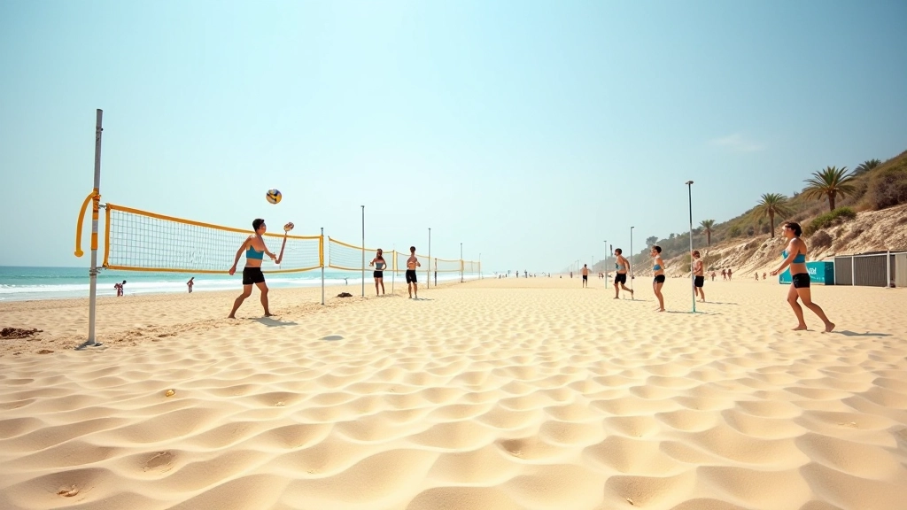
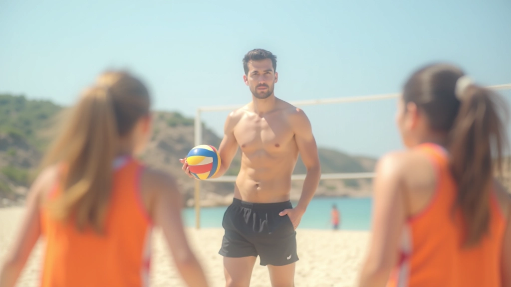
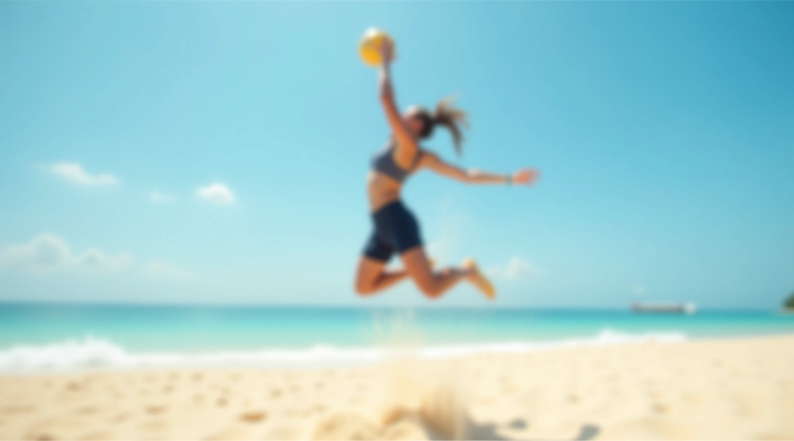
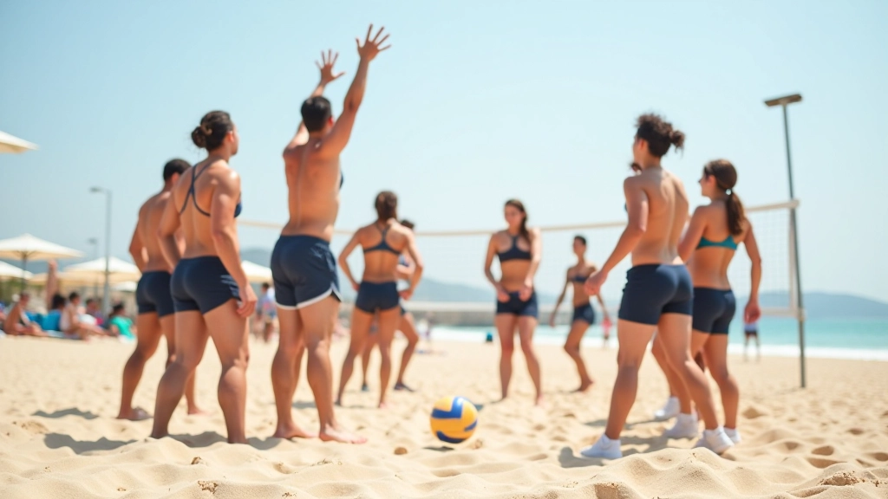
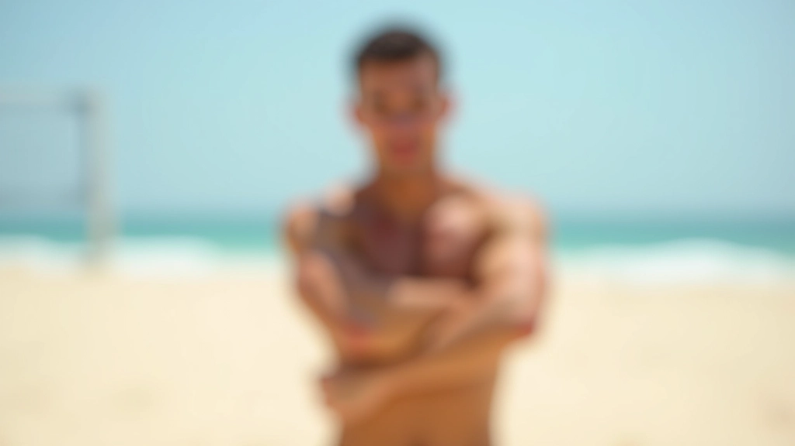

تمارين الحركة على الرمل في الكرة الطائرة الشاطئية
تعلم المهارات الأساسية والتقنيات المتقدمة لتحسين أدائك على شاطئ مارينا العلمين

المهارات الأساسية التي تحتاجها
الخطوات الأساسية للمبتدئين
تعلم كيفية التحرك بشكل صحيح على الرمل. نبدأ ببطء ونركز على وضعية الجسم والتوازن قبل الانتقال للحركات السريعة.
الحركة الجانبية السريعة
تطوير القدرة على الحركة السريعة جانباً. هذه مهارة أساسية في الدفاع وتتطلب تدريباً منتظماً على الرمل الناعم.
وضعية الاستعداد والتوازن
إتقان الموقف الصحيح يعني أنك مستعد لأي حركة قادمة. التوازن على الرمل يختلف عن الملاعب الأخرى، لذا نركز عليه بعناية.
ماذا ستحقق من خلال التمارين
تحسين الحركة والرشاقة
ستلاحظ تحسناً واضحاً في سرعة حركتك على الرمل وقدرتك على تغيير الاتجاه بسرعة.
زيادة القوة والتحمل
التمرين على الرمل يبني قوة عضلية أكبر ويزيد من قدرتك على الاستمرار في المباريات.
تقليل الإصابات
عندما تتحرك بشكل صحيح، تقلل من خطر الإصابات. التقنية السليمة هي أفضل حماية.
تطور الوعي الحركي
ستطور فهماً أعمق لجسدك وكيفية يتحرك. هذا الوعي ينقل مستواك للمرحلة التالية.

السنة التي بدأنا فيها تقديم محتوى تعليمي عن تمارين الحركة على الرمل
نركز على شرح تقنيات الحركة الصحيحة، التمارين العملية، والنصائح من الخبراء في الكرة الطائرة الشاطئية
نعمل مع مجتمع لاعبي الكرة الطائرة الشاطئية في مصر، خاصة في منطقة العلمين ومارينا
نقدم مجموعة شاملة من الأدلة والموارد التعليمية تغطي جميع جوانب تطوير مهارات الحركة على الرمل
أدلة وتمارين مختارة
استكشف مجموعتنا من الأدلة التفصيلية لتحسين مهاراتك
خطوات الحركة الأساسية للمبتدئين
سبتمبر 7، 2026
تمارين الحركة الجانبية السريعة
سبتمبر 7، 2026
إتقان وضعية الاستعداد والتوازن
سبتمبر 7، 2026
هل تريد الحصول على نصائح جديدة ومحتوى حصري عن تمارين الكرة الطائرة الشاطئية؟ تواصل معنا الآن
أجوبة على أسئلتك
هل يمكنني البدء إذا لم أكن لاعباً من قبل؟
بالتأكيد. تمارينا مصممة للمبتدئين أيضاً. نبدأ ببطء ونركز على الأساسيات قبل الانتقال للحركات الأكثر تعقيداً.
كم مرة في الأسبوع يجب أن أتمرن؟
يعتمد على مستواك والوقت المتاح. بشكل عام، تمرن 2-3 مرات في الأسبوع يعطيك نتائج جيدة دون الإرهاق.
هل التمرين على الرمل صعب على المفاصل؟
عندما تستخدم التقنية الصحيحة، التمرين على الرمل آمن وفعال. الرمل يوفر تخفيفاً طبيعياً للتأثير على جسدك.
كم من الوقت قبل أن أرى تحسناً؟
معظم الناس يلاحظون تحسناً في غضون 4-6 أسابيع من التمرين المنتظم. التحسن التدريجي أفضل من النتائج السريعة غير المستدامة.

تمارينك المختارة
استكشف الأدلة الأكثر شيوعاً والمفيدة

خطوات الحركة الأساسية للمبتدئين
تعرف على الطريقة الصحيحة للخطوة الأولى والحركات البطيئة التي تبني أساساً قوياً قبل الانتقال للسرعة.
اقرأ المزيد
تمارين الحركة الجانبية السريعة
طور قدرتك على الحركة السريعة جانباً مع تمارين متخصصة تركز على سرعة القدمين والتوازن الديناميكي.
اقرأ المزيد
إتقان وضعية الاستعداد والتوازن
اتقن الموقف الصحيح الذي يجعلك مستعداً لأي حركة. التوازن على الرمل يحتاج تدريباً خاصاً وننصحك به.
اقرأ المزيدهل أنت مستعد لتحسين مستواك؟
ابدأ رحلتك نحو إتقان مهارات الحركة على الرمل اليوم. اتصل بنا للحصول على مزيد من المعلومات والإرشادات الشخصية.
تواصل معنا الآننحن نستخدم ملفات تعريف الارتباط لتحسين تجربتك على موقعنا. من فضلك اختر قبول أو رفض لمتابعة التصفح.